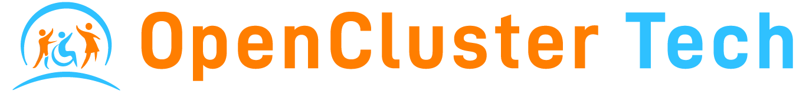
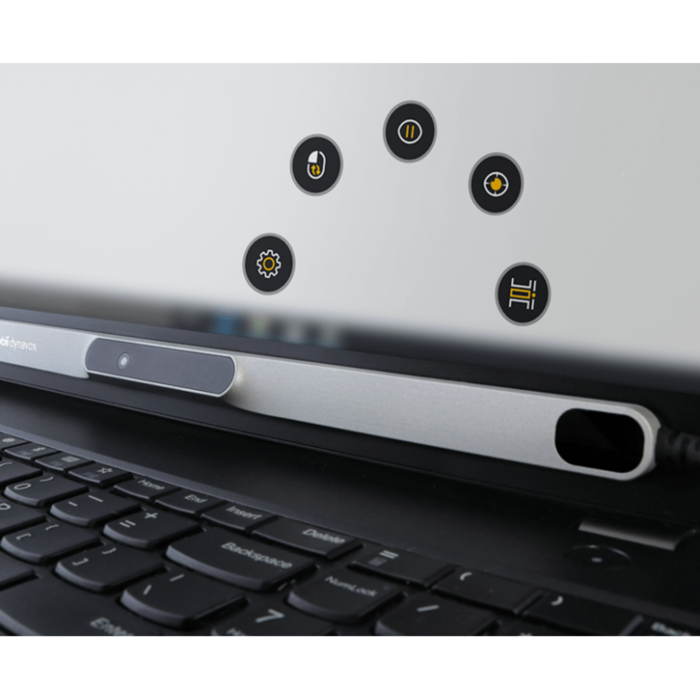
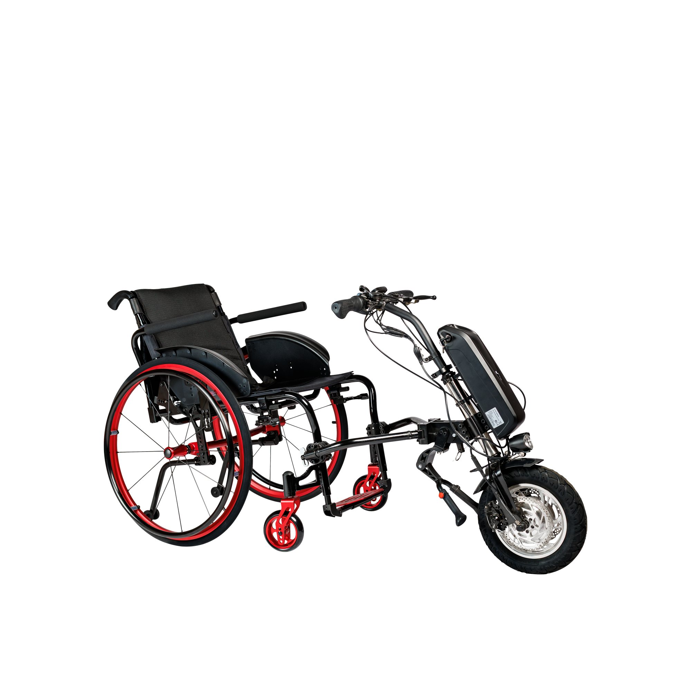
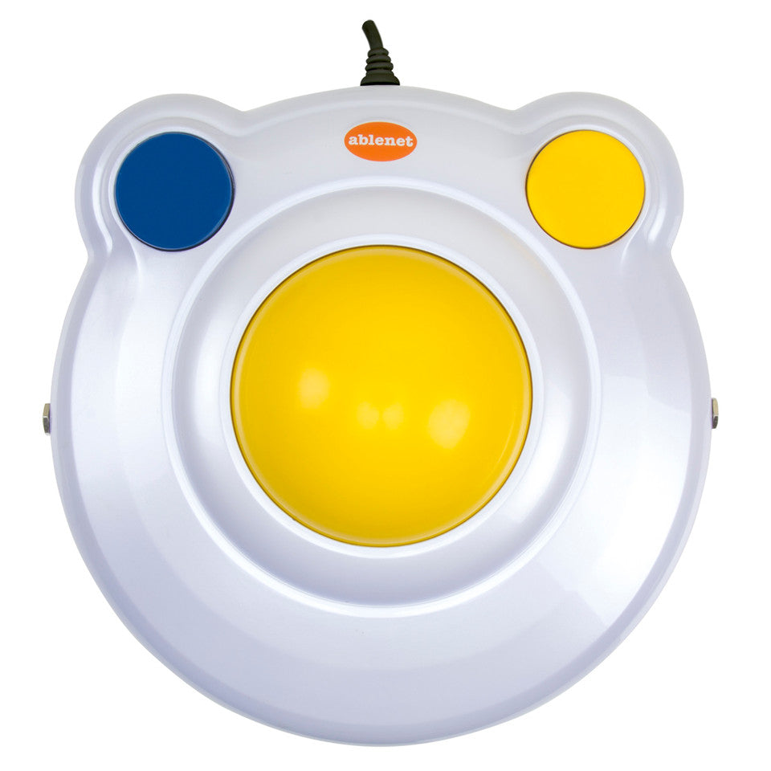

Capacitación para gestores SENADIS
SENADIS las financia.
Casi nadie las pide.
Presenta: Maximiliano · OpenCluster Tech



Su rol como gestor
Muchas familias no saben que estas ayudas existen. Si ustedes las conocen, pueden sugerirlas a tiempo.
1
Fotos reales y qué es, en palabras simples. Toque cualquier foto para verla en grande.
2
Paso a paso y, cuando existe, un video de la ayuda en uso.
3
Señales para detectarla, una frase para la familia y la ficha SENADIS.
1
Tener 10 años o más.
2
Estar inscrita en el Registro Nacional de la Discapacidad.
3
Estar dentro del 70% más vulnerable según el Registro Social de Hogares.
4
Pedir hasta dos ayudas técnicas por persona.
5
Ocular, cefálico, tablero de comunicación y notebook: se elige solo uno.
6
La handbike cuenta como silla de ruedas: una sola silla por persona.
9 ayudas · computador, tablero y Braille
Terapeuta ocupacional, kinesiólogo(a), fonoaudiólogo(a) o médico. El tablero y la máquina Braille también los indican educadores diferenciales, profesores y psicopedagogos.
Lupa digital
Lo firma un médico general o especialista.
2 handbikes
Lo firma un médico general o especialista. Hay que indicar la talla de la silla (36, 39 o 42 cm).
En todos los casos, el formulario debe tener menos de 3 meses al momento de postular.
01
Una ayuda técnica para quien no puede expresarse hablando.
Comunicar · Conózcalo
Una tablet con un programa que habla. La persona toca dibujos o palabras y la tablet dice la frase en voz alta.
Ejemplos: TD Snap en tablet · ComuniQa L
Tablero de comunicación digital
Tablero de comunicación digital
«Esta tablet le da voz: toca un dibujo y la tablet dice lo que quiere decir. Puede pedir, elegir y contar lo que siente.»
Edad: desde los 10 años
Vida útil: 2 años
Formulario: N°4
Firma: terapeuta ocupacional, fonoaudiólogo(a), educador(a) diferencial, profesor(a), psicopedagogo(a) o médico
Ojo: no se puede pedir junto con seguimiento ocular, seguimiento cefálico ni notebook.
02
Siete ayudas técnicas para estudiar, trabajar y conectarse, aunque no se puedan usar las manos o la vista.
Computador · Conózcalo
Una barra delgada bajo la pantalla que sigue los ojos. Mirar es apuntar; detener la mirada es hacer clic.
Ejemplo: Tobii PCEye 5
Dispositivo de seguimiento ocular
Dispositivo de seguimiento ocular
«Con este equipo puede usar el computador solo con los ojos: escribir, ver videos y hacer videollamadas con la familia.»
Incluye: notebook
Edad: desde los 10 años
Vida útil: 2 años
Formulario: N°4
Firma: kinesiólogo(a), terapeuta ocupacional, fonoaudiólogo(a) o médico
Ojo: no se puede pedir junto con tablero de comunicación, seguimiento cefálico ni notebook.
Computador · Conózcalo
Un mouse de 23 gramos que va en la cabeza. La persona gira la cabeza y el cursor se mueve.
Ejemplo: Quha Zono 2
Dispositivo de seguimiento cefálico
Dispositivo de seguimiento cefálico
«Con un sensor pequeñito en la cabeza puede manejar el computador sin usar las manos.»
Incluye: notebook
Edad: desde los 10 años
Vida útil: 2 años
Formulario: N°4
Firma: kinesiólogo(a), terapeuta ocupacional, fonoaudiólogo(a) o médico
Ojo: no sirve si mover el cuello no es seguro para la persona. No se pide junto con ocular, tablero ni notebook.
Computador · Conózcalo
Un mouse que no se arrastra: la base queda quieta y la persona gira una bola grande con la mano, el brazo o el pie.
Ejemplo: BIGtrack 2
Mouse trackball
Mouse trackball
«Es un mouse más fácil: no hay que arrastrarlo, solo mover una bola grande con la mano.»
Edad: desde los 10 años
Vida útil: 3 años
Formulario: N°4
Firma: kinesiólogo(a), terapeuta ocupacional, fonoaudiólogo(a) o médico
Buena pareja: se puede pedir junto con el teclado de teclas grandes. Juntos completan el máximo de dos ayudas por persona.
Computador · Conózcalo
Un teclado igual a cualquiera, pero con teclas de 2,5 × 2,5 cm, ordenadas en columnas y de colores.
Ejemplos: Aptia Color · Aptia Vista
Teclado de teclas grandes
Teclado de teclas grandes
«Es un teclado como el de siempre, pero con teclas grandes y de colores para no equivocarse.»
Nombre: teclado bigkeys
Edad: desde los 10 años
Vida útil: 3 años
Formulario: N°4
Firma: kinesiólogo(a), terapeuta ocupacional, fonoaudiólogo(a) o médico
Ojo: no incluye computador; la persona debe tener uno. Se puede pedir junto con el mouse trackball.
Computador · Conózcalo
Un programa para el computador: la persona habla y el texto aparece escrito. También obedece órdenes de voz.
Ejemplo: Dragon Professional 16
Software reconocedor de voz
«Hola, profesora. Le envío mi tarea de historia.»
Documento
Hola, profesora. Le envío mi tarea de historia.
Ejemplo ilustrativo
Software reconocedor de voz
«Es como dictarle a alguien: habla y el computador escribe lo que dice.»
Edad: desde los 10 años
Vida útil: 3 años
Formulario: N°4
Firma: kinesiólogo(a), terapeuta ocupacional, fonoaudiólogo(a) o médico
Ojo: es solo el programa. La persona debe tener computador con Windows; no funciona en Mac.
Así suena (ejemplo)
«Bandeja de entrada. Tres mensajes sin leer.»
Computador · Conózcalo
Un programa que lee en voz alta todo lo que hay en la pantalla: menús, correos, páginas web y documentos.
Ejemplo: JAWS
Software lector de pantalla
Software lector de pantalla
«El computador le va a hablar: le lee todo lo que hay en la pantalla para que lo use sin ver.»
Edad: desde los 10 años
Vida útil: 3 años
Formulario: N°4
Firma: kinesiólogo(a), terapeuta ocupacional, fonoaudiólogo(a) o médico
Buena pareja: junto con la lectura de textos con escáner, cubre lo digital y lo impreso. Requiere computador con Windows.
Computador · Conózcalo
Un escáner y un programa: se escanea una hoja impresa y el computador la lee en voz alta, en español.
Ejemplo: OpenBook + escáner Epson
Reconocimiento de caracteres con escáner
Reconocimiento de caracteres con escáner
«Pone la carta en el escáner y el computador se la lee en voz alta. Ya no tiene que esperar a que alguien se la lea.»
Incluye: escáner
Edad: desde los 10 años
Vida útil: 3 años
Formulario: N°4
Firma: kinesiólogo(a), terapeuta ocupacional, fonoaudiólogo(a) o médico
Ojo: no incluye computador; la persona debe tener uno con Windows. Va muy bien junto con el lector de pantalla.
03
Dos ayudas técnicas para baja visión y ceguera que no necesitan computador: ver la letra en grande y escribir en braille.
Ver y escribir · Conózcala
Una pantalla portátil con cámara. Se pone sobre el papel y muestra la letra mucho más grande, con colores que se leen mejor.
Ejemplo: lupa digital OpenCluster
Lupa digital
Lupa digital
«Es como una lupa, pero con pantalla: la pone sobre el papel y ve la letra todo lo grande que necesita.»
Edad: desde los 10 años
Vida útil: 4 años
Formulario: N°1A (respaldo médico)
Firma: médico general o especialista
Ojo: la firma un médico. Es para quien conserva algo de visión; si la persona es ciega, piensen en la máquina Braille, el lector de pantalla o el escáner.
Ver y escribir · Conózcala
Una máquina para escribir en braille sobre papel. Tiene seis teclas, una por cada punto del braille.
Ejemplo: Perkins Braille
Máquina de escribir Braille
Máquina de escribir Braille
«Con esta máquina puede escribir en braille: aprieta las teclas y los puntos quedan en relieve en el papel.»
Edad: desde los 10 años
Vida útil: 4 años
Formulario: N°4
Firma: terapeuta ocupacional, educador(a) diferencial, profesor(a) de básica o media, psicopedagogo(a) o médico
Buena pareja: la puede indicar un profesor o un educador diferencial, así que se postula fácil desde el colegio. Combina bien con el lector de pantalla o el escáner.
04
Dos ayudas técnicas que convierten la silla de ruedas en una bicicleta de manos.
Moverse · Conózcala
Una rueda con manubrio y pedales para las manos que se engancha adelante de la silla. La silla se convierte en una bicicleta de manos.
Ejemplo: handbike manual OpenCluster
Handbike de tracción manual
Handbike de tracción manual
«Con esto, su silla se transforma en una bicicleta que se pedalea con las manos: puede salir a pasear y hacer ejercicio.»
Incluye: silla activa, hasta 110 kg
Tallas: 36, 39 o 42 cm
Edad: desde los 10 años
Vida útil: 2 años
Formulario: N°1B
Firma: médico general o especialista
Ojo: cuenta como silla de ruedas. SENADIS permite postular a un solo tipo de silla por persona.
Moverse · Conózcala
La misma idea, con motor: la persona maneja con el manubrio y el motor hace el esfuerzo.
Ejemplo: handbike eléctrica OpenCluster
Handbike eléctrica
Handbike eléctrica
«Se engancha a su silla y tiene motor: puede ir al almacén o a la plaza sin depender de que alguien lo empuje.»
Incluye: silla activa, hasta 110 kg
Tallas: 36, 39 o 42 cm
Edad: desde los 10 años
Vida útil: 2 años
Formulario: N°1B
Firma: médico general o especialista
Ojo: es para calles asfaltadas y parejas. Cuenta como la única silla de ruedas que se puede pedir.
| Si la persona… | Piensen en… |
|---|---|
| No logra comunicarse hablando | |
| Solo controla bien los ojos | |
| Controla la cabeza, pero no las manos | |
| Mueve las manos, pero el mouse se le escapa | |
| Se equivoca de tecla o no las distingue bien | |
| Habla bien, pero no puede escribir | |
| No ve la pantalla | |
| No puede leer textos en papel | |
| Tiene baja visión y no logra leer la letra impresa | |
| Es ciega y necesita escribir en braille | |
| Usa silla de ruedas y tiene fuerza en los brazos | |
| Usa silla de ruedas y quiere recorrer más sin cansarse |
Gracias por ser el puente.
opencluster-tech.cl
Índice